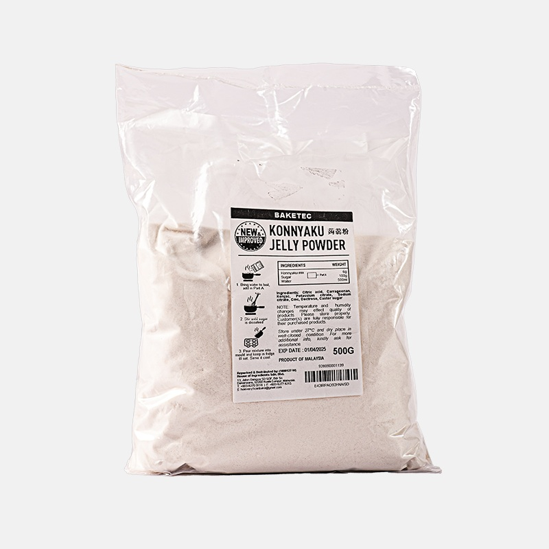

50 qr – 12 AZN
Sahlep orkide bitkisinin kök yumrularından əldə edilən təbii tozdur.
Ənənəvi olaraq isti içki hazırlanmasında və xalq təbabətində istifadə olunur.
Sahlebin faydaları
- Bədəni isidən və gücləndirən təsiri ilə tanınır
- Boğazın yumşalmasına və rahatlamasına kömək edə bilər
- Enerji və toxluq hissi verə bilər
Tənəffüs sistemi üçün təsiri
- Soğuqdəymə zamanı isti içki kimi istifadə olunur
- Boğaz qıcıqlanmasının azalmasına dəstək ola bilər
- Xalq arasında öskürək zamanı istifadə edilir
Sahlep necə hazırlanır?
- 1 çay qaşığı sahlep süd ilə qarışdırılır
- Aşağı odda qarışdırılaraq bişirilir
- Darçın və bal əlavə edilə bilər
İstifadə zamanı diqqət
- Həddindən artıq istifadə tövsiyə edilmir
- Hamilə qadınlar üçün uyğun deyil
- Uşaqlarda istifadə zamanı ehtiyatlı olunmalıdır
- Allergik reaksiyası olanlar diqqətli olmalıdır